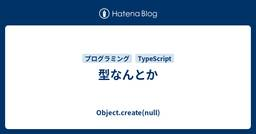

直近1週間の人気フィード
はてなブックマーク数を元に新着優先で並べ替え
Deploy with Void 23 Cloudflare Blog
23 Cloudflare Blog
Introducing Void: an open-source SDK, CLI, and self-hosted platform for building full-stack Vite apps and deploying them to Cloudflare.
2日前

型なんとか 39 Object.create(null)
いろいろあって毎回説明するの大変なのでまとめておきます. 型変換 (type conversion) 基本的には明示的 / 暗黙的といった手段によらず, ランタイムの値を別の型に変換することを指していると思います. ランタイムの値が変わるのだから, 結果として静的な方の型も変わることにはなります. JavaScript / TypeScript でいうと, typeof x === "number" な x に対して String(x) と明示的に変換することもできるし, "foo" + x のように (ここでは数値を文字列の文脈で使うことで) 暗黙的に変換されることもあります. 型キャスト …
7日前
Yandex outage: Data shows that instead of going dark, malicious bots went on the move 4 Cloudflare Blog
When strikes hit Yandex data centers, many assumed Russian bot operations went dark. Cloudflare data reveals that while search crawling stopped, malicious bots simply migrated to other networks.
3日前